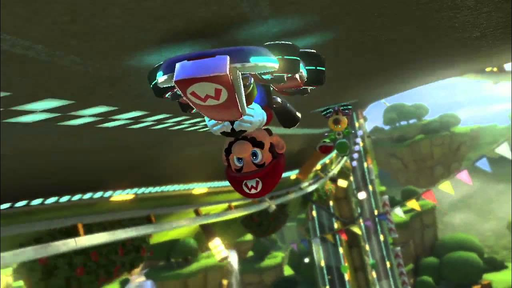

Mario Kart 8 Deluxe est aujourd’hui l’un des jeux les plus populaires de la Nintendo Switch. Accessible à tous les âges, il combine fun immédiat et compétition intense. Que l’on soit débutant ou joueur expérimenté, le jeu offre une prise en main rapide tout en laissant de la place à la stratégie et à la maîtrise des circuits.

L’un des grands points forts du jeu est sa grande variété de modes de jeu. En plus du mode Grand Prix classique, les joueurs peuvent s’entraîner en contre-la-montre, affronter l’intelligence artificielle ou se mesurer à d’autres joueurs en ligne. Le mode bataille, entièrement retravaillé dans cette version Deluxe, propose plusieurs types de défis comme la bataille de ballons ou la chasse aux pièces, idéals pour des parties rapides et amusantes.
Mario Kart 8 Deluxe se distingue aussi par ses nombreuses options de personnalisation. Les joueurs peuvent choisir leur personnage, leur kart, leurs roues et leur aile, ce qui influence directement la vitesse, l’accélération et la maniabilité. Cette personnalisation permet à chacun d’adapter son style de conduite selon ses préférences, rendant chaque course unique.
Le jeu est également très apprécié pour son accessibilité. Des aides à la conduite, comme l’assistance à la direction ou l’accélération automatique, permettent aux plus jeunes joueurs ou aux débutants de profiter pleinement des courses sans frustration. En même temps, les joueurs plus compétitifs peuvent désactiver ces options pour une expérience plus technique.
Enfin, Mario Kart 8 Deluxe bénéficie d’un suivi exceptionnel grâce au Pass circuits additionnels, qui ajoute régulièrement de nouveaux circuits inspirés des anciens jeux de la série. Ce contenu supplémentaire prolonge considérablement la durée de vie du jeu et renouvelle l’intérêt des joueurs sur le long terme. Grâce à son contenu abondant, son multijoueur solide et son univers emblématique, Mario Kart 8 Deluxe s’impose comme un incontournable pour toute bibliothèque Nintendo Switch.